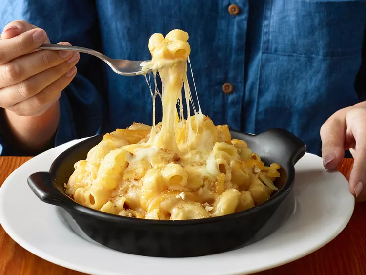

Pasta Cream

TEST
DESCRIPTION
This is the description of the recipe. Zutaten: Sahne, schinken, Brühe, Salz, Pfeffer, Muskatnuss, Parmesan , Tortellini (oder Nudeln)
Sahne kochen, Brühe hinzugeben, Sal hinzugeben, aufkochen lassen, Maskutnuss hinzu, Parmesan einmischen, nicht mehr heftig kochen lassen sondern nur köcheln, Schicken dazu, fertig.
Zutaten
- Sahne
- Schinken
- Brühe
- Salz
- Pfeffer
- Muskatnuss
- Parmesan gerieben oder pulver
- PTortellini (oder Nudeln)
Steps
- Sahne aufkochen
- Brühe, Salz, Muskatnuss hinzu, aufkochen lassen
- Parmesan einmischen, nicht mehr uafkochen lassen. nur noch köcheln
- Schinken schneiden und hinzu
- servieren, gegebenfalls mit Parmesan bestreuen